AngioTool
Installation
- Upgrade your Java version to 7 at http://dlc.sun.com.edgesuite.net/jdk7/binaries/index.html.
Download and install the Windows Platform, Multi-Language JDK version
(jdk-7-ea-bin-bXXX-windows-i586-18_feb_2011.exe in the website above).
- Confirm that your computer is running the appropriate java version at
http://www.java.com/en/download/installed.jsp.
The test should confirm "Your Java version is 1.7.0-ea".
- Download AngioToolSetup.exe from http://angiotool.nci.nih.gov to your computer. Double click and follow
the installation Wizard (it is recommended to add the AntgioTool Icon to the
computer desktop).
AngioTool Quick Guide
- Double click on the AngioTool icon in your desktop
 or on the executable file (AngioTool.exe) located in the folder where the program was installed.
The main GUI has two separate tabs: "Analysis" and "Settings"
or on the executable file (AngioTool.exe) located in the folder where the program was installed.
The main GUI has two separate tabs: "Analysis" and "Settings"
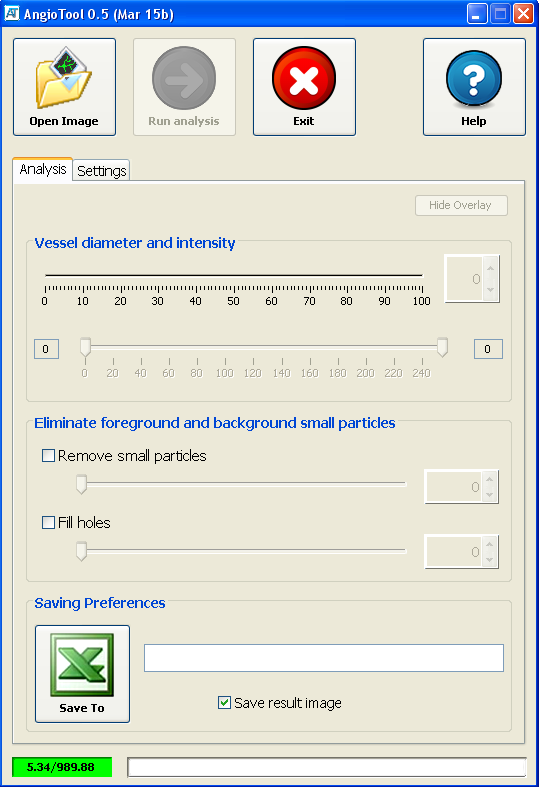
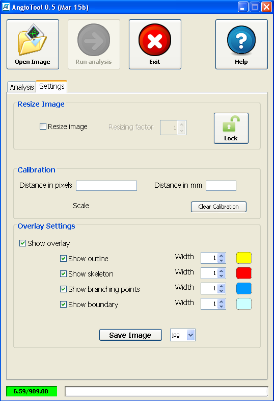
- Open an image by clicking the Open Image button
in the Analysis tab (see instruction #9 for how to resize the image). AngioTool will open the image in a separate window and will perform an initial
selection of vessels based on pre-set parameters. The vessel selection is shown by a yellow overlay on the
image. In order to tune the selection of the vessels the analysis parameters can be adjusted.
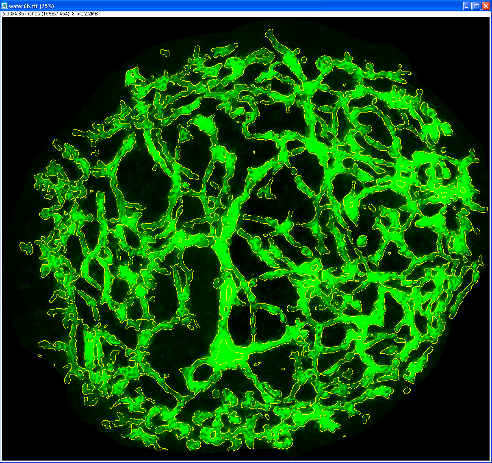
- Adjust the Vessel diameter and Vessel intensity controls.
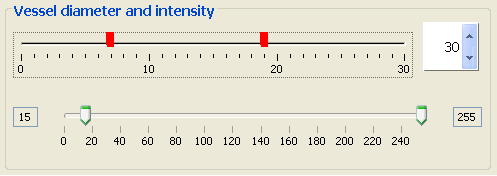
Click on the Vessel diameter control to select vessels based on their diameter. Selections
are shown as red ticks which can be individually toggled off by clicking on them.
Clicking on higher diameter values will select thicker vessels and vice versa.
Multiple selections are allowed.
The vessels outline will dynamically update its shape in response to the
adjustments done to the controls.
This enables rapid visual fine tuning of the selection.
By default, this control presents the user with a broad range of possible
thicknesses. However if necessary, the upper limit of this range can be
dynamically modified by adjusting the spinner next to the control.
The second control, Vessel intensity, allows to select
vessels based on their intensity. In order to detect
fainter vessels drag the lower thumb to lower numbers. To eliminate
nonspecific high intensity pixels from the selection lower the higher thumb.
-
Two additional controls are provided to fine tune the vessel selection.
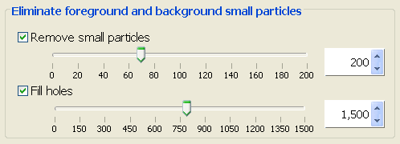
To eliminate background particles by size adjust the Remove small particles
control. Particles smaller than the size selected in the control will be
removed from the selection.
To fill unselected areas inside vessels adjsut the Fill holes control.
To activate these controls click on their associated checkbox. The
associated spiners can be used to dynamically modify the range of the
controls. Remember to always consult the actual changes in the outline
overlay of the test image.
-
The Hide Overlay button toggles the overlay on and off
helping to evaluate the accuracy of the selection at every
moment during the analysis.
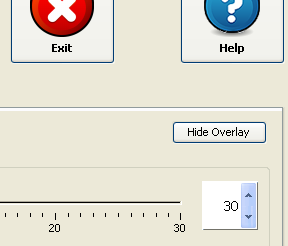
-
Click on the Excel icon in the Saving Preferences panel to
select the file in which to save the data generated in the analysis. The path
of the selected file will be shown on the associated textbox.
If a directory and a name are not set, an Excel file will be generated and
saved with a unique name (ResultsXXXXXX.xls) in the folder where the test
image is located.
Click on the Save result image checkbox to instruct the
program to save the image resulting from the analysis. By default, the
resulting this image will be saved to the same location where the test image
is located.
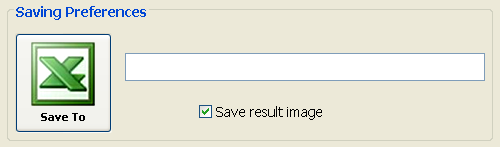
-
Once the outline overlay best matches the vessels in the test image, click the
Run analysis button
to start the analysis (see instruction #10 to learn how to set the calibration).
The progress bar at the bottom of the main GUI will
update on the progress of the analysis. Once the analysis is completed the
resulting overlay will show the outline of the area covered by vessels, the
skeleton and the
branching points (points in the image where two or more skeleton segments
meet).
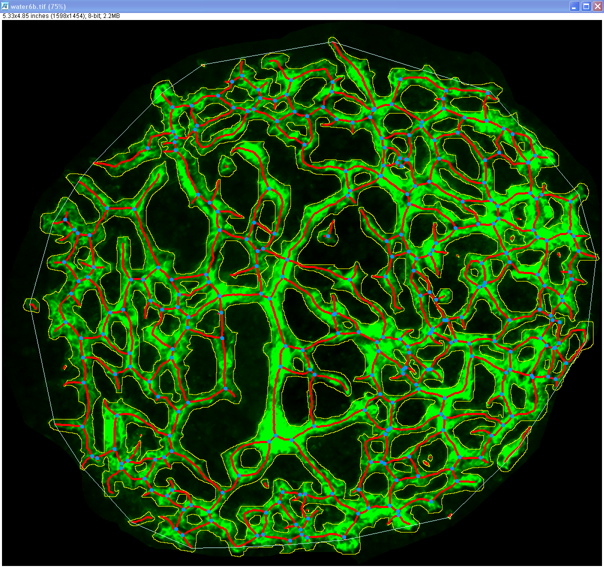
-
Both the analysis settings and the computed parameters are written in
separated blocks to the indicated Excel file. The recorded analysis settings
include the date and time of the analysis, the location of the test image, and
the user selected values for the controls in the Analysis tab
and the calibration information in the Setting tab.
Data generated in separate AngioTool sessions but written to the same Excel
file are appended at the end of the file each with bold headings (red arrows).
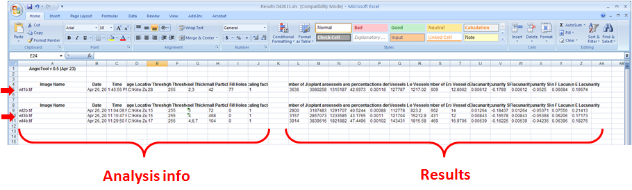
-
The Settings tab provides with controls to customize the
analysis and the results. Use the Resize Image control to
downsize the test image. Resizing the test image will result in significantly
faster ananlysis often without impact on the results of the analysis.
To activate this control click the Resize Image checkbox and
use the associated spinner to enter the desired resizing factor. This control
needs to be set prior to opening the test image and will lock after the image
is openes. Click on the unlock/lock icon
/
to lock/unlock the control.
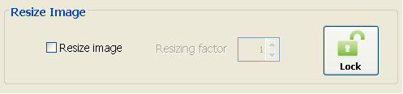
-
Use the Calibration control to define a correlation between
pixels and an alternative unit length in the image (AngioTool uses millimeters
as unit of length). To set a calibration type the length in pixels in the
Distance in pixels box and the corresponding length in
millimeters in the Distance in mm box.
This control needs to be set before running the analysis of the image.
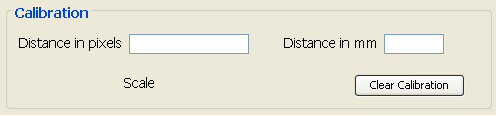
-
Use the Overlay Settings to customize the appearance
(stroke width and colour) of the different components of the overlay.
Click on the checkboxes to show or hide the different components of the
overlay and the associated spinners and color boxes to customize their
width and color. Use the Save Image button to save the
resulting image after adjusting the Overlay Settings. The format of the
image can be set in the associated listbox.
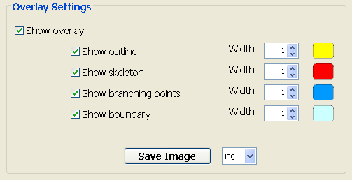
-
The Help button
shows this guide.
-
Use the Exit button
to exit AngioTool.